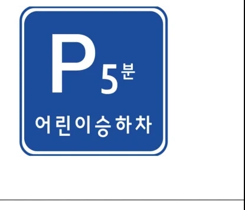

958. Giải thích nào không đúng với biển báo an toàn sau?

- ①Xe buýt đưa đón trẻ có thể dừng xe trong suốt thời gian hiển thị trên biển báo để cho trẻ lên xuống xe trong khu vực bảo vệ trẻ em.
- ②Xe buýt đưa đón trẻ có thể đỗ xe và dừng xe trong suốt thời gian hiển thị trên biển báo để cho trẻ lên xuống xe trong khu vực bảo vệ trẻ em.
- ③Xe ô tô v,v... có thể dừng xe để cho trẻ lên xuống xe trong khu vực bảo vệ trẻ em.
- ④Xe ô tô v.v... để cho trẻ lên xuống xe trong khu vực bảo vệ trẻ em, có thể dừng xe nhưng không được đỗ xe.
Xem đáp án
Đáp án
④ Xe ô tô v.v... để cho trẻ lên xuống xe trong khu vực bảo vệ trẻ em, có thể dừng xe nhưng không được đỗ xe.
Căn cứ
Quy tắc thực thi Đạo luật Giao thông Đường bộ Phụ lục 6 320-4 Biển báo lên và xuống xe dành cho trẻ em Đây là hướng dẫn cho phép xe buýt và ô tô của trường học của trẻ em dừng và đỗ trong thời gian ghi trên biển báo dành cho trẻ em lên và xuống xe trong khu vực bảo vệ trẻ em. Trong khu vực bảo vệ trẻ em, xe buýt, ô tô chở học sinh... có thể dừng, đỗ để trẻ em lên xuống xe và được lắp đặt bên phải đường tại các điểm, đoạn cần thiết hoặc có gắn hoặc lắp đặt các biển báo phụ chỉ điểm bắt đầu, kết thúc đoạn đường hoặc thời gian.
Phần căn cứ là bản dịch máy để tham khảo.